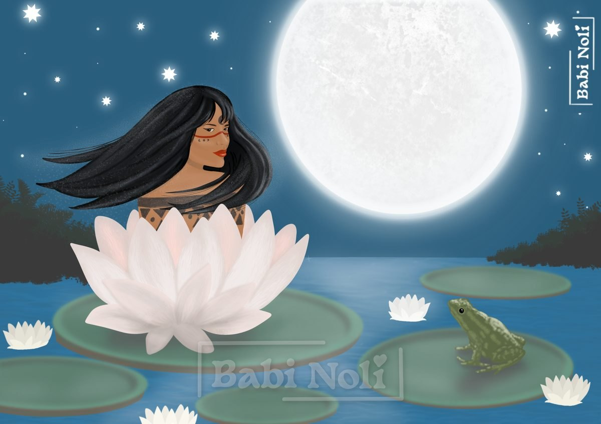
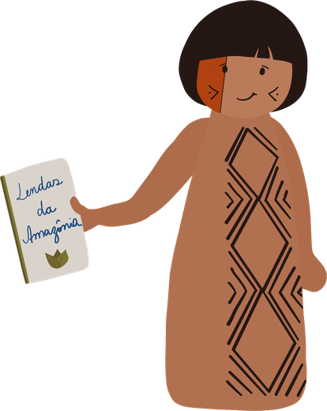

A Vitória-régia


Vitória-régia é o nome europeu dado a uma planta aquática que possui lindas flores que se abrem ao luar. Em guarani, seu nome é irupé.
Conta a lenda que Jaci, a deusa da Lua, selecionava as moças mais especiais das aldeias para serem suas escolhidas. Elas eram abençoadas com um beijo de luz e seguiam suas vidas sendo iluminadas por Jaci. Algumas até eram levadas por ela, transcendendo assim o corpo físico.
Havia, entretanto, em uma aldeia muito distante, uma bela jovem chamada Naiá, de cabelos negros e compridos. Naiá era uma moça vaidosa e sonhadora que se sentia especial. Pensava ter um grande propósito na vida. Ela tinha a certeza de que um dia seria escolhida por Jaci.
Qualquer semelhança com Narciso aqui é mera coincidência, mas não dá pra ignorar o ego da jovem.
Ela passou a perseguir a Lua aonde quer que fosse, fascinada pela ideia de ser escolhida e ir além da carne, subindo aos céus com Jaci.
Naiá passava as noites procurando a Lua incansavelmente; já não tinha nem fome nem sono. Um dia, exausta de procurar pela Lua, se aproximou de um lago e viu o reflexo de uma grande bola branca brilhante. Pensando estar vendo a própria Lua, jogou-se no lago por instinto, mergulhando para tocá-la.
Ao mergulhar, percebeu que não podia mais ver o reflexo da Lua e tentou nadar de volta à superfície. Mas não conseguiu: suas pernas estavam presas em plantas aquáticas do fundo do lago. Tentou se soltar, se debateu entre as plantas, mas tudo foi em vão; já estava sem forças e cansada.
Naiá estava sem ar, quase se afogando, quando Jaci, ao ver o fim trágico da sonhadora jovem que queria transcender mais que tudo no mundo, por compaixão, decidiu salvá-la.
Jaci desceu até o fundo do lago e, com um beijo iluminado, a salvou, transformando-a em uma estrela das águas e dando-lhe assim a vida eterna.
O espírito de Naiá transcendeu o corpo como ela tanto desejava. Ela se transformou na Irupé e vive em cada flor de irupé que nasce. E, a cada nascer e renascer, ela se arruma e se prepara para reencontrar a Lua: se põe bonita e perfumada e se abre toda branca para receber a luz da Lua. Seu amor se renova a cada luar, e o branco das pétalas vai dando lugar a um rosa suave, simbolizando sua felicidade em se unir novamente a Jaci.
Curiosidades
A mudança de cor do final da história acontece de verdade: a flor da vitória-régia abre branca na primeira noite e, na segunda, fica rosada.
A flor branca esquenta e solta um perfume adocicado, parecido com o de abacaxi, que atrai os besouros que a polinizam.
As folhas redondas, de borda levantada, podem chegar a cerca de 3 metros de diâmetro.
O nome científico do gênero, Victoria, é uma homenagem à rainha Vitória, do Reino Unido.
Em 2022, cientistas do Jardim Botânico de Kew, em Londres, identificaram uma nova espécie gigante, a Victoria boliviana, que passou mais de 180 anos guardada no herbário com o nome errado. Suas folhas chegam a 3,2 metros de largura.